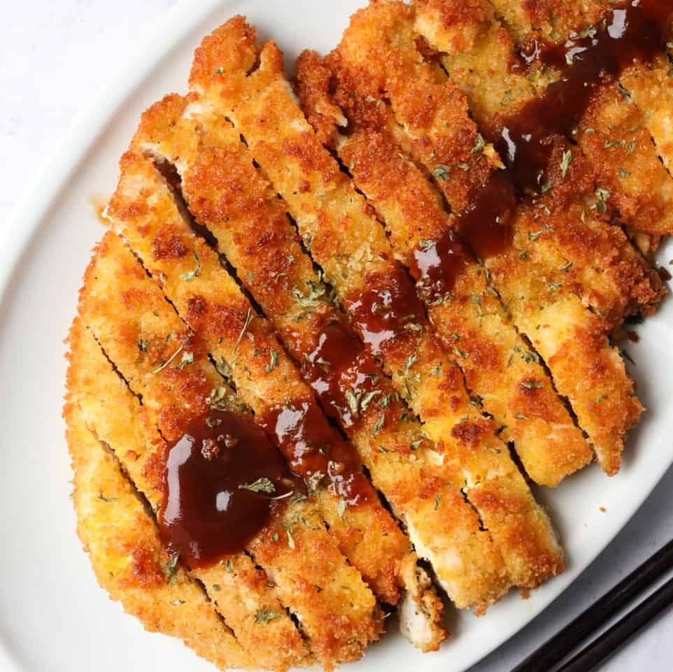

Chicken Katsu Recipe

Description
Chicken katsu is Japanese-style fried chicken. This is my family recipe and can also be used to make tonkatsu by using pork cutlets instead of chicken. Serve with white rice and tonkatsu sauce.
Ingredients
- Chicken: You'll need four skinless, boneless chicken breast halves.
- Seasoning: This chicken katsu recipe is simply seasoned with salt and pepper.
- Flour: All-purpose flour helps seal in the moisture, adds flavor, and promotes browning.
- Egg: An egg adds moisture and gives the Panko something to stick to.
- Panko: Panko bread crumbs are responsible for katsu's signature crunch.
- Oil: Opt for a neutral oil with a high smoke point, such as canola or vegetable oil.
Steps
- Season the chicken, then dredge in flour.
- Coat each breast in egg, then press into the Panko.
- Fry the chicken katsu until golden brown.